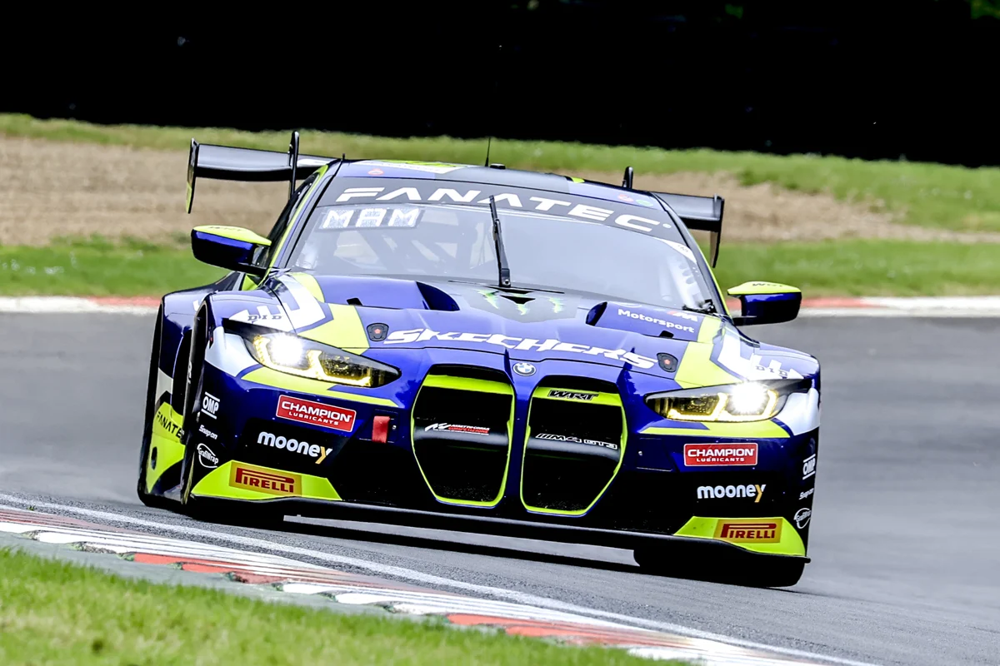

BMW M4 GT3 CS
BMW M4 GT3 CS
590 CV
1.250 kg
Motor delantero
Tracción trasera
Motor 6 cilindros 3.0 litros
Coche muy equilibrado gracias a su reparto de peso del 50%-50%, con un buen setup puede ser de los mas comppetitivos, tiende a subvirar en curva lenta debido al peso delantero y a su motor delantero